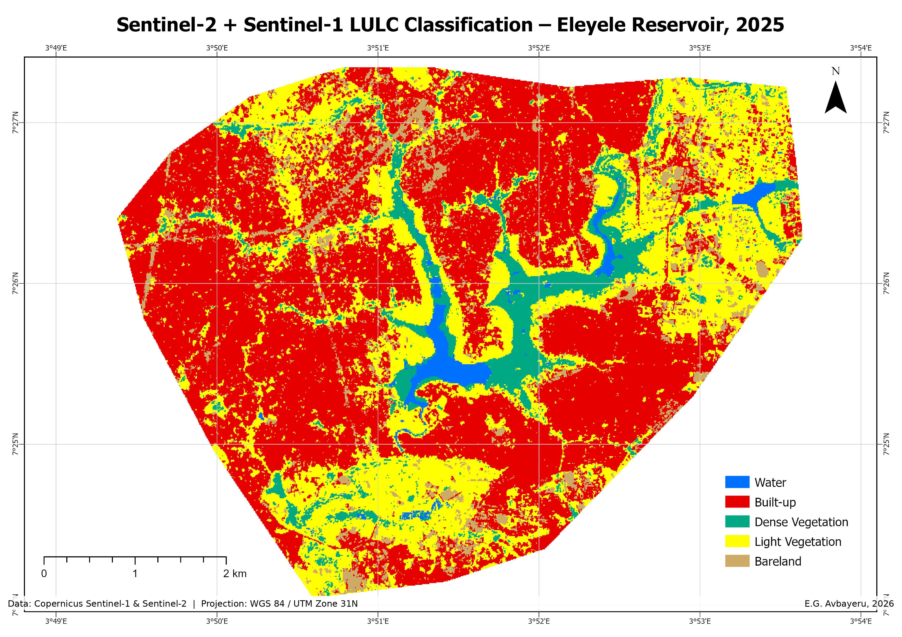

Overview
Does adding radar to optical imagery actually improve land cover classification? That was the question. SAR is supposed to help in cloud-prone tropical regions like Nigeria because it penetrates cloud cover, and it picks up surface texture and moisture that optical bands miss. But does it actually make the final map better?
To find out, I classified the same area (Eleyele Reservoir and its surroundings in Ibadan) twice using Random Forest in Google Earth Engine: once with Sentinel-2 optical bands and spectral indices alone, and once with Sentinel-1 SAR backscatter (VV, VH, VV/VH ratio) added on top. Same training data, same five classes, same validation split. Then I compared the results.
Method
Sentinel-2 Surface Reflectance imagery was filtered to under 10% cloud cover and composited as a 2025 annual median. Six spectral bands (Blue, Green, Red, NIR, SWIR1, SWIR2) plus three derived indices (NDVI, NDWI, NDBI) gave nine optical predictors. For the fusion run, three Sentinel-1 GRD variables (VV, VH, VV/VH ratio) from a 2025 median composite were added, bringing total predictors to twelve.
Five land cover classes were digitised as point training data: Water, Built-up, Dense Vegetation, Light Vegetation, and Bareland. A 70:30 train/validation split was done at the spatial block level (~50 m blocks) to avoid autocorrelation between training and validation samples. Random Forest was trained with 200 trees for the optical-only run and 300 trees for the fusion run.
Final cartography was done in ArcGIS Pro. Projection is WGS 84 / UTM Zone 31N.


What I found
The Sentinel-2-only classification scored higher on overall accuracy (97.09% vs 95.60%). That was surprising, since the expectation going in was that more data would mean better results.
But the class-level numbers told a different story. The fusion approach improved water detection, with producer's accuracy jumping from 93% to 97.7%. The biggest shift was in bareland: the fusion run reclassified a large portion of what Sentinel-2 alone labelled as bareland into built-up, with bareland area dropping by 36% between the two scenarios. SAR backscatter was picking up surface roughness differences between bare soil and built surfaces that the optical bands couldn't separate.
The Random Forest variable importance ranking backed this up. The SAR bands (VV, VH, VV/VH ratio) ranked at the bottom. Optical bands like SWIR2, NIR, and Red, plus the spectral indices (NDVI, NDBI, NDWI), drove most of the classification. SAR contributed as a supporting layer, not a dominant one.
Tools and data
- Classification - Random Forest, Google Earth Engine (JavaScript API)
- Optical data - Sentinel-2 SR (COPERNICUS/S2_SR_HARMONIZED), 2025 median, <10% cloud
- SAR data - Sentinel-1 GRD (IW mode, VV+VH polarisation), 2025 median
- Validation - 70:30 spatial block split (~50 m blocks)
- Cartography - ArcGIS Pro, WGS 84 / UTM Zone 31N